Im Angebot: Das größte von Märklin jemals erbaute Schiff
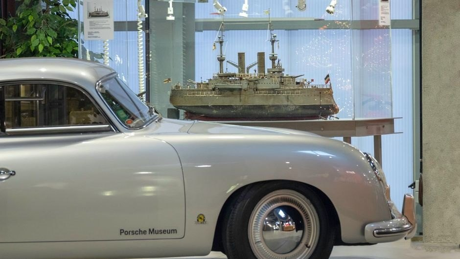
Die 1,20 Meter lange „Brunsvic“ zusammen mit einem Porsche 356 bei der Vorstellung des Porsche-Museumswagens im Märklineum.
SWR 4 – Radioreportage zur Auktion 2019: „Märklin-Schlachtschiff ist versteigert“
Das größte von Märklin jemals gebaute Schiff ist das Highlight der Winterauktion des Auktionshauses Hohenstaufen am 22. und 23. Februar. Die 1,20 Meter lange „Brunsvic“ – hier zusammen mit einem Porsche 356 anlässlich der Vorstellung des Porsche-Museumswagens im Märklineum – stammt aus dem Jahr 1907. „Es sind noch weltweit drei Exemplare bekannt“, berichtet der Inhaber des Auktionshauses Hans Georg Grupp. Ein Exemplar schenkte der deutsche Kaiser Wilhelm II. dem Kaiser von China. Das geht aus Aufzeichnungen von Märklin hervor. Insgesamt kommen 1000 meist hochwertige Objekte zum Aufruf. Neben Autos, Flugzeugen und Karussells sind das auch Märklin-Eisenbahnen und deren Zubehör.
Ausstellung · Stuttgarter Zeitung · 23. Januar 2018
Seltenes und heiß begehrtes Blechspielzeug
Ausstellung vor der Göppinger Märklin-Auktion
Von Andreas Pflüger
Die wichtigsten Stücke der Märklin-Winterauktion, die am 2. und am 3. März im Auktionshaus Hohenstaufen am Göppinger Rosenplatz stattfindet werden im Museum des Modellbahnherstellers gezeigt.
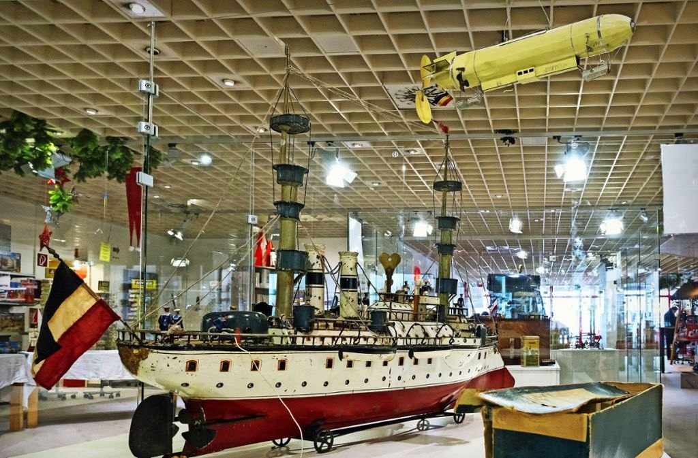
Die „Kaiser Wilhelm der Große“ und der Märklin-Zeppelin sind zwei der Schmuckstücke der Auktionsausstellung. Foto: Veranstalter
SWR – Radiobeitrag zur Auktion 2018: „Wertvolle Märklin-Sammlerstücke unter dem Hammer“
Göppingen - Für gewöhnlich sorgen Spielsachen ja dafür, dass Kinderaugen leuchten. Einige besondere Raritäten, wie sie noch bis Ende Februar in mehreren Vitrinen im Göppinger Märklinmuseum an der Ecke Ulmer Straße/Reutlinger Straße zu sehen sind, dürften aber vor allem die Herzen von Sammlern höherschlagen lassen. Was in den Schaukästen gerade ausgestellt wird, kommt am Freitag, 2. März, und am Samstag, 3. März, unter den Hammer, wenn das Auktionshaus Hohenstaufen zu einem weiteren Versteigerungsmarathon in seine Räume am Rosenplatz bittet.
Die sogenannte Winterauktion, bei der neben einer Vielzahl an Loks und Waggons auch seltenes und wertvolles Blechspielzeug den Besitzer wechseln wird, dürfte abermals ein internationales Publikum anlocken. „Wir rechnen erneut mit einem vollen Haus. Das zeigt sich aus meiner Sicht bereits jetzt an dem großen Interesse an den Stücken, die gerade im Märklinmuseum gezeigt werden“, gibt sich Hans Georg Grupp, der Leiter des Auktionshauses, zuversichtlich.
Dort ist unter anderem die „Kaiser Wilhelm der Große“ aufgebaut. Bei einer Länge von 1,05 Metern ist sie nicht nur ein großes, sondern auch das früheste von Märklin hergestellte Schlachtschiff: im Jahr 1899 gefertigt, von Hand bemalt und nach dem ersten deutschen Kaiser benannt. Nur wenige solche Exemplare haben nach Grupps Worten die Zeit überdauert. Nicht minder spannend ist für die Experten ein Märklin-Zeppelin von 1904, der in der Ausstellung über der „Kaiser Wilhelm der Große“ schwebt und ebenso wie dieses uhrwerkbetrieben und voll funktionsfähig ist. Was das Schlachtschiff und der Zeppelin sowie einige weitere Exponate im Betriebszustand alles können, ist in der Schau zwar leider nicht zu sehen, dafür aber auf der Homepage des Auktionshauses, wo ein gut zehnminütiger Videoclip eingestellt ist.
In Bewegung bringen lässt sich auch ein Feuerwehrmagazin von 1900, das als Diorama dargestellt ist. In der Halle, deren Doppelgatter-Türen sich per Druckknopf öffnen lassen, stehen Feuerwehrwagen, die zu jener Zeit noch von einem Pferdegespann gezogen wurden. Ein Hingucker ist zudem ein aus Blech gefertigter Kaufladen namens „Colonialwaaren“, der ebenfalls um 1900 herum von Märklin hergestellt und in Wurzelholz-Furnierung bemalt worden ist. Von dem Objekt, das etliche längst vergessener Waren feilbietet, soll es laut Grupp weltweit nur noch zwei Exemplare geben.
In jedem Fall ist der Chef des Auktionshauses guter Dinge, dass sich – nicht zuletzt durch die jetzt ausgestellten Schmuckstücke – auch in diesem Jahr wieder ein klasse Gesamtumsatz erzielen lassen wird. Ob dieser an das Rekordergebnis von 1,5 Millionen Euro aus dem Vorjahr heranreiche, stehe jedoch auch für ihn in den Sternen, ergänzt er.
Quelle: Stuttgarter Zeitung, 23. Januar 2018 · Text: Andreas Pflüger
In seiner Auktion am 2. und 3. März bietet das Auktionshaus Hohenstaufen viele Märklin-Raritäten an.
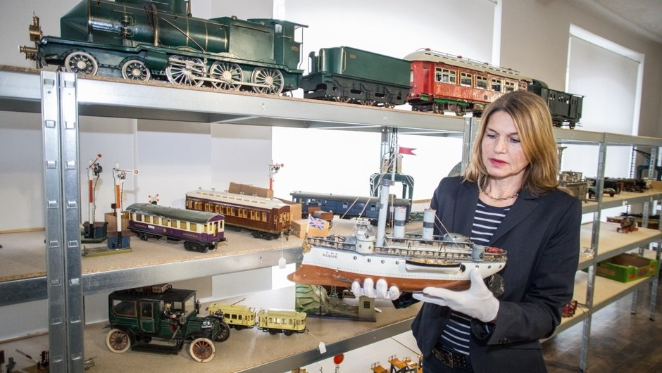
Da schlagen Sammlerherzen höher: Beate Grupp mit einem Märklin-Schiff aus dem Jahr 1902. Oben auf dem Regal ist der Zarenzug zu sehen, ein Geschenk Frankreichs an den Zarenhof.
Im Kalender von Sammlern ist dieser Termin dick angestrichen: In seiner kommenden Winterauktion am 2. und 3. März bietet das Auktionshaus Hohenstaufen in Göppingen am Rosenplatz wieder eine hochkarätige Auswahl an altem Blechspielzeug für ein nationales und internationales Publikum an. Die Höhepunkte der Auktion sind bis Ende Februar im Märklin Museum ausgestellt und finden dort bereits reges Interesse.
Einer der Glanzpunkte der Ausstellung ist, wie der Inhaber und Geschäftsführer des Göppinger Auktionshauses, Hans Georg Grupp, mitteilt, das früheste von Märklin im Jahr 1899 hergestellte Schlachtschiff in wunderschöner Handbemalung ausgestellt. Das 105 Zentimeter lange Schiff wurde nach dem ersten deutschen Kaiser, „Kaiser Wilhelm der Große“, benannt. Nur wenige Exemplare haben die Zeit überlebt und sind noch existent. Über dem Schiff kreist ein Märklin-Zeppelin von 1904. „Beide widerspiegeln ein realistisches Bild der damaligen Zeit und sind uhrwerksbetrieben in voller mechanischer Funktion“, schwärmt Georg Grupp.
Ein Videoclip auf der Internetseite des Auktionshauses zeigt diese seltenen Objekte in Betrieb. Mehr für das weibliche Publikum ist ein ganz aus Blech gefertigter Kaufladen ausgestellt. Dieser zeigt eine große Anzahl längst vergessener Waren in seinem Sortiment. Das als „Colonialwaren“ deklarierte Objekt wurde um 1900 von Märklin hergestellt und in Wurzelholz Furnierung kunstfertig bemalt. „Weltweit existieren nur zwei Exemplare“, berichtet der Inhaber des Auktionshauses.
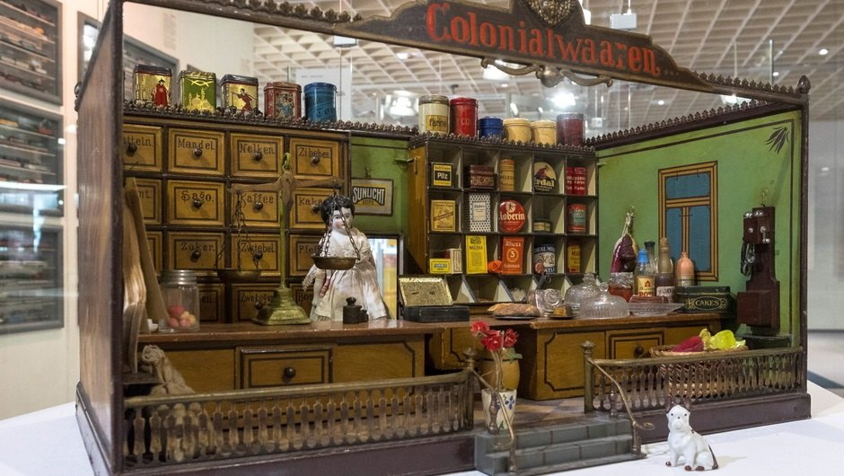
Auch das ein Schmuckstück für die Auktion: Weltweit existieren nur zwei Exemplare dieses Colonialwaren-Ladens von Märklin.
In einer dritten Vitrine ist das frühe Feuerwehrmagazin von 1900 als Diorama dargestellt. Die Feuerwehrwagen wurden zu dieser Zeit noch mit einem Pferdegespann bewegt. Die Feuerwehrhalle ist in der seltenen Version mit Doppelgatter-Türen ausgestattet und diese können mit einem am Dach angebrachten Druckknopf gleichzeitig geöffnet werden.
Bei der Auktion wird ein weiteres Highlight angeboten, das Sammlerherzen höher schlagen lässt. Der lange als verschollen geglaubte „Train Geant“, von Brianne um 1905 in Frankreich hergestellt. Dieser „Riesenzug“ galt als Nationalheiligtum der Franzosen, wurde vom französischen Staat an den Zarenhof nach Russland geliefert und verschwand im russischen revolutionären Umbruch. Er galt 80 Jahre als verschollen und wurde erst in den 1970er Jahren auf einem Schrottplatz gefunden. Er wurde seinerzeit von dem größten Eisenbahnsammler und „Eisenbahnkönig“ L. Bommer in der Schweiz erworben. Der Zug hat eine Spurweite von 140 Millimeter und kostete im Jahre 1905 1250 Franc. Über diesen Zug wurde bereits mehrmals in der SWR Fernsehsendung Eisenbahnromantik berichtet.
Das Auktionshaus Hohenstaufen am Göppinger Rosenplatz versteigert historisches Blechspielzeug, alte Eisenbahnen und Dampfmaschinen von privaten Einlieferern und hat sich durch ein Weltrekordergebnis der letztjährigen Auktion als international führendes Haus für Spielzeugauktionen etabliert.
Sensationelle Ergebnisse bei der Winterauktion des Auktionshauses Hohenstaufen: Eine Märklin-Dampfmaschinenfabrik wurde für 440.000 Euro ersteigert. 95 Prozent der gut 1000 Objekte gingen weg.
SWR Landesschau vom 6. Februar 2016
„Diese Auktion hat Geschichte geschrieben“, strahlt Hans Georg Grupp, Geschäftsführer des Auktionshauses Hohenstaufen. Super-Ergebnisse und eine Versteigerungsquote von nahezu 100 Prozent bescherten ihm einen „Überschwang der Gefühle“. Von Auktionator Markus Rockmann, seines Zeichens öffentlich bestellter und vereidigter Auktionator und Versteigerungsprofi, hörte er, dass er so etwas noch nicht erlebt habe. Die Teilnehmer, auch auktionserfahren, seien ganz aufgeregt gewesen über die Ergebnisse, die hier ein ums andere Mal erzielt wurden.
Es wurde ein wahrer Bieteransturm. Der Saal des Auktionshauses am Rosenplatz war „gerammelt voll“, sagt Grupp, über 100 wollten dabeisein, und gesteigert wurde auf allen Kanälen. Die schriftlichen Vorgebote waren seit der Vorweihnachtszeit noch von 1200 auf über 2000 angewachsen. „Das sind für jedes Objekt zwei“, verdeutlich Grupp. Insgesamt 200 Telefonbieter kamen hinzu. Da liefen die Drähte heiß. Bis zu sechs, sieben Telefonbieter waren an einem Objekt dran.
Grupp kann nur in Superlativen sprechen: „Das sehr gute Ergebnis vom letzten Jahr wurde noch bei weitem übertroffen.“ Die Schlaglichter: Mit über 60 Prozent Abverkauf wäre das Auktionshaus schon wirklich zufrieden – diesmal waren es 95 Prozent. Der Allzeitrekord: Für 440.000 Euro ging das Modell einer Dampfmaschinenfabrik weg, das in Göppingen anno 1906 gefertigt worden ist – „der höchste jemals für ein Märklin-Produkt erzielte Preis“, schwärmt Grupp. Das passt zu diesem besonderen Stück. „Es ist das größte Objekt, das Märklin je hergestellt hat.“ Pate dafür standen seinerzeit der Dampf- und Werkmaschinenraum der Märklin-Fabrik. Das Modell kostete damals 240 Goldmark. Für den jetzigen Liebhaberwert bekäme man ein Haus.
Mit 145.000 Euro ging die „Halle“ ins Rennen und erzielte das Dreifache. Das war’s für den Bieter noch nicht. Zu den 440.000 Euro kommt das Aufgeld von 20 Prozent für das Auktionshaus. Das gute Stück wandert nun über den großen Teich. Ein Mann aus den USA, das kann Grupp mitteilen, ist der neue Besitzer. Was nicht ungewöhnlich ist. Es gab Interessenten von Amerika bis Asien. Die Ergebnisse der Auktion hätten auch schon die New York Times erreicht, hat Grupp gehört.
Für Grupp die größte Überraschung: Eine Berglandschaft aus dem Hause Märklin von 1895 erzielte gar das Zehnfache des Katalogpreises. Für 22.000 Euro wurde sie aufgerufen, am Ende standen 215.000 Euro zu Buche.
110.000 Euro brachte ein handbemaltes Modell von 1907/08, das dem Zarenbahnhof von St. Petersburg nachempfunden ist. Der Schoner „Jolanda“ erzielte 44.000 Euro, ein Ozeanliner von 1906 landete in ähnlicher Höhe. Vier Schiffe, ein U-Boot, Flugzeuge, zwei Zeppeline und dampfbetriebene Autos gingen ebenso weg wie Herde, Dampfmaschinen, Militärspielzeug, Autobaukästen und Metallkästen. Auch alte Kataloge sind Liebhaber-Stücke. Einer wurde für 2500 Euro ersteigert.
Zu 80 Prozent war es Märklin-Spielzeug, das das Auktionshaus Hohenstaufen einmal mehr für die Sammlerwelt anbot. „Wir sind fokussiert auf Uraltsachen“, sagt Grupp. Die wertvollsten Stücke stammten alle aus der Zeit vor dem Ersten Weltkrieg.
Das angeblich größte Blechmodell, das der Göppinger Spielzeughersteller Märklin jemals auf den Markt gebracht hat, kommt Anfang Februar im Auktionshaus Hohenstaufen unter den Hammer. Noch ist es in der Erlebniswelt zu sehen.
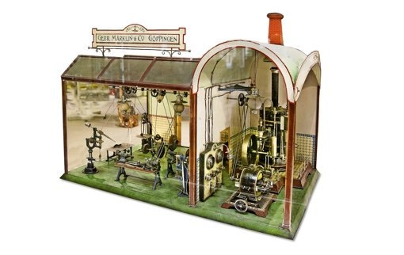
Alles voll funktionstüchtig: rechts die Dampfmaschine mit Turbine, links die Werkstatt. Foto: Horst Rudel
Göppingen - Es ist mehr als einen Meter breit, rund 70 Zentimeter hoch und es steckt alles drin, was vor 100 Jahren Stand der Technik war: Bei der nächsten Versteigerung im Auktionshaus Hohenstaufen kommt wieder ein besonderes Stück aus der Werkstatt der Firma Märklin unter den Hammer. Es handelt sich um die mehr als 100 Jahre alte Nachbildung einer Fabrik, wobei sich Märklin der Einfachheit halber das eigene Haus zum Vorbild nahm. „Es ist das größte Blechmodell, das Märklin jemals gebaut hat“, sagt der Auktionator Hans Georg Grupp.
Sechsstellige Summe dürfte es werden
Für 240 Goldmark, so lässt es sich in einem Märklin-Katalog aus dem Jahre 1905 nachlesen, wurde das gute Stück angeboten. „Das war ein stolzer Preis, für den man damals auch ein Grundstück bekommen hätte“, sagt Grupp, der die Zielgruppe unter Fabrikanten vermutet, die es als Demonstrationsmodell zum Beispiel in ihrer Lobby ausstellen konnten. Tatsächlich dürften allenfalls einige Sonderanfertigungen ausgeliefert worden sein. Ein weiteres, heute noch existierendes Modell sei ihm auch nach aufwendiger Recherche nicht bekannt geworden, sagt Grupp, der durchaus erwartet, dass das Modell 100 Jahre später nicht billiger geworden ist. Wer die Fabrik haben wolle, müsse wohl eine sechsstellige Summe bieten.
Ein privater Sammler habe die Fabrik jetzt zur Versteigerung angeliefert, bis Anfang Februar sei sie noch in der Märklin-Erlebniswelt ausgestellt. Alles sei noch voll funktionstüchtig, sagt Grupp. Im Turbinenraum steht eine Dampfmaschine mit einem zwei Liter fassenden Dampfkessel, der mit Spiritus beheizt wird. Im Nebenraum sind die Miniaturausgaben einer Drehmaschine, einer Fräse und einer Stanze aufgestellt, die über einen mechanischen Seilzug, rotierende Wellen und Transmissionsriemen angetrieben werden. Sogar ein kleiner Blasebalg wird auf diese Weise bewegt.
Spielte der Zar auch mit Märklin?
Alternativ kann statt der Dampfmaschine auch ein Elektromotor zugeschaltet werden. Auch dieser Antrieb über das Lichtnetz, wie es damals hieß, war in Fabriken um die Jahrhundertwende gebräuchlich. Am Blechmodell will Grupp es allerdings nicht einschalten. „Das ist nicht ganz ungefährlich.“
Die Fabrik ist nicht der einzige Superlativ bei der Auktion am 5. und 6. Februar. Auch der größte Märklin-Bahnhof, eine ebenfalls mehr als 100 Jahre alte Nachbildung der Bahnstation in Sankt Petersburg in Spurweite 2 kommt zum Aufruf. Märklin unterhielt damals eine Dependance in der damaligen russischen Hauptstadt. Auch der Zar gehörte zu den Kunden. Sicher ist, das der Bahnhof in den 60er Jahren an den bekannten Sammler Graf Giasanti Coluzzi ging. Er ließt seine Sammlung kurz vor seinem Tod bei Christie’s zu Geld machen. Die Aufkleber des Londoner Auktionshaus sind noch zu sehen. Auch das dürfte manchem Sammler gefallen.
Quelle: Stuttgarter Zeitung, 21. Januar 2016 · Text: Eberhard Wein
Hans Georg Grupp möchte bei der kommenden Winterauktion vom 5. bis 6. Februar hochwertiges Blechspielzeug versteigern.
900 Exponate, unter anderem von der Firma Märklin, stehen dann für Sammler bereit.
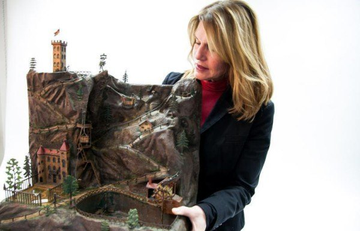
Der Blick von Beate Grupp richtet sich auf ein wertvolles Bergbau-Modell aus dem 19. Jahrhundert. Es stammt aus einem Familienbesitz. Foto: Hans Georg Grupp
Fotoausrüstung, Fotobeleuchtung und ein weißer Behang sind in den hinteren Räumen des Auktionshauses Hohenstaufen in Göppingen am Rosenplatz aufgebaut. Ein Güterschuppen steht auf dem weißen Tuch. Das handgefertigte Modell der Firma Märklin stammt noch aus der Zeit vor dem Ersten Weltkrieg. Ursprünglich als Spielzeug gefertigt, wird es nun für den Katalog der Winterauktion von 5. bis 6. Februar fotografiert. Viel Arbeit für Hans Georg Grupp und seine Mitarbeiter. Annährend 900 Einzelobjekte, das meiste ist Blechspielzeug, werden am Auktionstag aufgerufen. Zehn Wochen veranschlagt der Auktionator für die Vorbereitungen.
Unter den Objekten befinden sich weitere besondere Stücke wie die Märklin Dampfmaschinenfabrik aus dem Jahre 1906: "Es ist das größte Objekt, dass Märklin je hergestellt hat", berichtet Grupp. Die Maße betragen 124,5 auf 86,4 auf 68,6 Zentimeter. Dampf- und Werkmaschinenraum entsprächen der damaligen Fabrik Märklin in Göppingen. Für Sammler der Glanzpunkt auf der Auktion. Dafür spricht schon der damalige Preis von rund 240 Goldmark.
Ein weiteres Highlight ist der Märklin-Ozeanliner von 1906. Das damals 100 Goldmark teure Schiff konnte sich mit einer im Inneren verbauten Dampfmaschine vorwärts bewegen. Vor dem ersten Weltkrieg hätten sich Spielzeuge mit dieser Qualität nur die gehobene Mittelschicht und die Oberschicht leisten können, erzählt Grupp. Die Spielzeughersteller aus Deutschland seien damals weltweit führend gewesen. Besonders die Handarbeit und von Künstlern geschaffene Bemalung hätten seinesgleichen gesucht.
Für Grupp ein Grund, warum heute noch Sammler aus der ganzen Welt zu ihm nach Göppingen kommen. Große Nachfrage komme besonders aus den USA. Deshalb werbe er auch dort in Zeitungen für die Auktion in der Kreisstadt. Im Februar erwartet der Auktionator dann großen Andrang. Bereits 1200 schriftliche Vorgebote seien eingegangen. 80 bis 100 Bieter werden vor Ort versuchen auf eines der seltenen Stücke zu bieten. Weitere Telefonbieter kommen hinzu. Trotz der großen Nachfrage rät Grupp seinen Kunden in naher Zukunft zu verkaufen. Denn trotz der Beliebtheit der Exponate, die Anzahl der Sammler sinkt, der Bedarf werde geringer.
Schließlich zeigt Grupp noch Bilder eines besonderen Bahnhofs. Er ist in Anlehnung an den Zarenbahnhof in St. Petersburg gefertigt worden. Das handbemalte Modell befindet sich derzeit noch im Göppinger Märklin-Museum. Davor steht ein handgefertigter Kaiserzug mit Wappen. Das Spur-2-Modell wird aber separat versteigert. Bahnhof mit Kaiserzug, Ozeanliner und die Märklin-Fabrik können zurzeit noch im Museum betrachtet werden, bevor sie im Februar in private Hände gehen.
International · Antique Toy World (USA) · Februar 2015
February 2015 Auction Preview
Vorschau auf die Winterauktion 2015 für Sammler in den USA – mit der „Augusta Victoria“, einer Märklin-Einschienenbahn, dem Brauerei-Zug für den amerikanischen Markt und weiteren Raritäten.
Geschichte · Frankfurter Allgemeine Zeitung · 19. Januar 2015
Rififi in Göppingen
Von Peter Thomas
Vor zehn Jahren wurde das Märklin-Museum ausgeraubt. Die Beute wurde wiederbeschafft. Eines der Stücke wird nun versteigert.
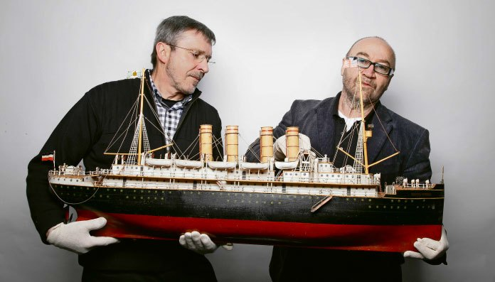
Die „Augusta Victoria“ – 1,20 Meter langer Märklin-Schnelldampfer, 2005 beim Raub im Märklin-Museum entwendet und wiederbeschafft.
GÖPPINGEN, 18. Januar. Sie kamen mitten in der Nacht und raubten Märklin die Seele der Markengeschichte. Vor zehn Jahren drangen in der Nacht auf den 18. Januar 2005 drei Einbrecher in das Museum des Spielzeugherstellers ein, öffneten brutal die Vitrinen und verschwanden mit den teuersten Stücken der Göppinger Sammlung. Schnell stellte sich heraus, dass der Raub minutiös geplant und vorbereitet worden war. Den Alarmgeber an der Fluchttür hatten die Einbrecher am Tag vorher zerstört, die Sirene auf dem Flachdach füllten sie mit Bauschaum aus. Weniger professionell gingen die Gangster beim Abtransport der Beute vor.
Roland Gaugele, damals Museumsleiter und Pressesprecher bei Märklin, ist noch heute sichtlich erschüttert, wenn er die Szenerie beschreibt, die sich ihm am nächsten Morgen bot: Zwischen den Splittern des Vitrinenglases lagen noch Fragmente der wertvollen Exponate – das ließ nichts Gutes für deren Zustand erahnen. Die Liste der gestohlenen Preziosen war lang. Das 1891 gebaute „Storchenbein“, die älteste Modell- Lokomotive der Märklin-Geschichte, war ebenso darunter wie Schiffsmodelle, Dampfmaschinen und Modellbahnfahrzeuge in verschiedenen Spurweiten.
Auch das „Krokodil“ in Spur 0 war verschwunden – die Miniatur der Schweizer Gotthard- Lok (Baureihe Ce 6/8II der SBB) gilt als Märklins Wappentier. Insgesamt fehlten rund 200 Stücke. Gesamtwert: 1,7Millionen Euro. Es begann eine intensive Fahndung nach den Einbrechern, auch die internationale Gemeinde der Märklin-Sammler trug mit vermeintlich heißen Tipps dazu bei. „Ich habe jeden Tag bis zu eine Stunde damit verbracht, diese Hinweise zu falsifizieren, die bis aus Australien kamen“, erinnert sich Gaugele an die Tage nach dem Raub. Der entscheidende Hinweis kam dann Wochen später aus Wien.
In der österreichischen Hauptstadt waren Beamte von Interpol auf einen Hehler aufmerksam geworden, der eine große Sammlung historischen Spielzeugs auf den Markt bringen wollte. Aber waren es die gesuchten Exponate aus dem Göppinger Museum? Im Lauf der Ermittlungen würde die Polizei einen Experten brauchen, der die historischen Spielzeuge einwandfrei identifizieren konnte und der sich zudem als Lockvogel zur Verfügung stellen würde. Gaugele sagte zu.
Was dann passierte, erinnert an den Plot eines Thrillers: stundenlanges Warten am Wiener Südbahnhof, endlich ein Anruf auf dem Telefon des verdeckten Vermittlers, der Kunde solle zu einer Limousine kommen, die an der nächsten Kreuzung warte. Jetzt war Märklin-Mann Gaugele auf sich gestellt. Er ging zu dem schwarzen Wagen, stieg ein. Drinnen schob ihm ein untersetzter Mann in Lederjacke einen Schuhkarton zu und fragte knapp: „Was ist das wert?“ Für den Göppinger war auf den ersten Blick klar, dass die Sammelstücke in der Pappkiste aus dem Museum stammten. „Von diesem Moment an lief die Fahndung mit mehr als 100 Beamten auf Hochtouren.“
Es folgte eine aufwendige Ermittlung mit Observierungen und fingierten Übergaben. Gaugele stand in Göppingen stets auf Abruf, um die Polizei-Aktion mit seiner Expertise zu unterstützen. Schließlich schnappte die Falle zu, der Wiener Kripo gingen die Hehler und einer der Einbrecher ins Netz. Auch rund 80 Prozent der gestohlenen Stücke wurden sichergestellt. Noch aber fehlten die beiden weiteren Räuber und eine Reihe besonderswertvoller Exponate. Da kamen zwei Tage später der Zufall und die Aufmerksamkeit einer italienischen Polizeistreife den Ermittlern aus Österreich und Deutschland zu Hilfe.
Die Carabinieri stoppten auf der Autobahn in Richtung Slowenien einen verdächtigen Wagen, in dem sie Mitglieder einer Schleuserbande vermuteten. Stattdessen tauchten im Kofferraum die fehlenden Märklin-Objekte auf.
Auch die beiden großen Blechschiffe wurden in Italien sichergestellt, darunter die „Augusta Victoria“ – damals als Leihgabe eines privaten Sammlers bei Märklin gezeigt und eines der wertvollsten Stücke des Raubes.Während die Exponate in Firmenbesitz nach der Wiederbeschaffung ins Museum zurückkehrten (und teilweise noch heute die Spuren der rauhen Behandlung durch die Diebe zeigen), stellte der Sammler sein rares Blechschiff nicht mehr in Göppingen aus. Zehn Jahre nach dem Raub hält Gaugele den Dampfer nun doch wieder in Händen – diesmal jedoch als Auktionator, nicht als Museumsleiter.
Denn nach der Insolvenz Märklins im Februar 2009 (kurz vor dem 150-Jahr-Jubiläum des Unternehmens) verlor Gaugele nach 30 Jahren seine Stelle. Zunächst wandte der ehemalige Museumsleiter sein Wissen über historisches Spielzeug als Kurator von Ausstellungen und als Gutachter an. 2013 gründete er schließlich gemeinsam mit Hans- Georg Grupp, einem vereidigten Sachverständigen für Blechspielzeug, das Auktionshaus Hohenstaufen in Göppingen. Bei der nächsten Auktion des Hauses am Göppinger Rosenplatz kommt nun am 21. Februar die 1,20 Meter lange Miniatur der „Augusta Victoria“ zur Versteigerung.
Das Modell wurde von Märklin als schwimmfähiges Antriebsmodell mit Elektromotor gebaut, zudem ließe sich eine Dampfmaschine nachrüsten. Benannt ist das Spielzeugschiff nach einem Schnelldampfer, der 1889 bei der Hamburg-Amerikanischen Packetfahrt-Actien-Gesellschaft (Hapag) in Dienst gestellt wurde. Eigentlich sollte das Schiff den Namen der deutschen Kaiserin Auguste Victoria tragen. Vor dem Stapellauf hatte sich jedoch ein (im Original erst 1896 korrigierter) Schreibfehler eingeschlichen, den Märklin damals in aller Detailtreue übernahm. Der Schätzpreis für das Schiffsmodell liegt bei mehr als 100 000 Euro.
Quelle: Frankfurter Allgemeine Zeitung, 19. Januar 2015 · Text: Peter Thomas
Märklin-Dampfer unterm Hammer – Odyssee in die Unterwelt
Wer im Februar in Göppingen die Augusta Victoria ersteigert, ersteht nicht nur ein wertvolles Märklin-Schiff, sondern auch ein Stück Kriminalgeschichte mit Interpol, Aktzenzeichen und einem Märklin-Sprecher als Lockvogel in der Unterwelt.
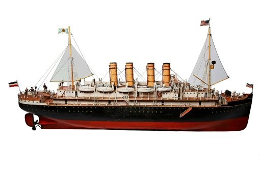
Das gute Stück ist bei dem Raub unversehrt geblieben. Foto: privat
Göppingen - Zehn Jahre nach dem spektakulären Millionenraub im Märklin-Museum kommt eines der bedeutendsten, damals entwendeten Exponate im Göppinger Auktionshaus Hohenstaufen unter den Hammer. Es handelt sich um das mehr als 100 Jahre alte Modell des Ozeanriesen „Augusta Victoria“. Es konnte zwar später durch einen Zufall von der italienischen Polizei sicher gestellt werden. In Göppingen wurde es aber nie mehr gezeigt. „Der Leihgeber hatte das Vertrauen in uns verloren“, sagt Roland Gaugele, der damals Märklin-Sprecher war. Heute ist er Mitgeschäftsführer des Auktionshauses und freut sich über die Begegnung mit der alten Bekannten. Für solche Stücke seien schon sechsstellige Summen gezahlt worden.
Für Märklin war der mit brachialer Gewalt ausgeführte Einbruch in der Nacht zum 18. Januar 2005 ein schwerer Schlag. 176 Modelleisenbahnen, Dampfmaschinen, Autos und Schiffe räumten die Räuber aus den Vitrinen. So entwendeten sie das legendäre Storchenbein, die älteste Modellbahnlokomotive der Welt. Auf 1,7 Millionen Euro schätzte ein Experte den Gesamtwert der Beute.
Kritik an mangelhafter Sicherheit
Doch das war es nicht allein. „Uns hat man einen Teil unserer Geschichte gestohlen“, stellte der damalige Geschäftsführer Paul Adams fest. Ohnehin warern es schlechte Zeiten für das Traditionsunternehmen. Kurz zuvor hatte Märklin bekannt gegeben, dass man sich aus wirtschaftlichen Gründen von einem Drittel der rund 1000 Beschäftigten trennen müsse. Nun kam noch der Vorwurf hinzu, die eigene Firmengeschichte nur unzureichend gesichert zu haben. Durch ein allzu laxes Sicherheitssystem habe man die Räuber begünstigt, stellte später ein Richter fest. Allzu sehr hatte man darauf vertraut, dass die Exponate ohnehin unverkäuflich seien. Ein Sammler wolle seine wertvollsten Exponate doch zeigen und nicht im Keller verstecken, sagte Gaugele damals.
Die Prominenz der geraubten Stücke erwies sich dann tatsächlich als Problem für die Langfinger. Vergeblich boten sie die heiße Ware zunächst in Deutschland an. Dann konzentrierten sich ihre Bemühungen auf Wien. Doch die Polizei hatte ihre Fühler ebenfalls dorthin ausgestreckt. Ein Kommissar hatte kurz vor dem Einbruch das Museum besucht. Dabei war ihm ein Auto mit Wiener Kennzeichen aufgefallen. Zwar hatte dies, wie sich später herausstellte, nichts mit dem Einbruch zu tun. Doch die Wiener Gendamerie war sensibilisiert. Zudem hatte die Göppinger Kripo Interpol eingeschaltet, und auch „Aktenzeichen XY. . . ungelöst“ berichtete.
Der Märklin-Mann als Lockvogel
Und so kam es, dass der Pressesprecher Gaugele zum polizeilichen V-Mann avancierte. „Die Polizei brauchte jemanden, der sich mit Modellbahnen auskennt.“ Mehrfach wurde er nach Wien gerufen, um sich als finanzstarker Sammler mit mutmaßlichen Hehlern zu treffen. „Ich wurde über Handy zu verschiedenen Treffpunkten gesteuert.“ Drei Stunden lang musste Gaugele am Wiener Südbahnhof warten, ehe schließlich eine schwarze Limousine vorfuhr. „Mir wurden mehrere Modelle gezeigt, deren Echtheit ich bestätigte.“ In der Folge kam es zu mehreren Übergaben und schließlich zum Zugriff der Polizei, die einen Großteil der Beute beschlagnahmte.
Ergebnisse · Stuttgarter Zeitung · 23. August 2014
Gebote aus dem In- und Ausland bei der Sommerauktion
Die Gebote zahlreicher Interessenten aus dem In- und Ausland haben am vergangenen Wochenende bei einer Auktion des Göppinger Auktionshauses Hohenstaufen für zufriedene Gesichter bei den beiden Verantwortlichen, Hans Georg Grupp und Roland Gaugele, sowie bei einem Großteil der Verkäufer gesorgt. Mehr als 1000 Objekte, überwiegend Erzeugnisse aus früherer Märklin-Produktion, waren zum Aufruf gekommen und wechselten zu Preisen zwischen fünf und 45 000 Euro den Besitzer. Viele Käufer hatten, nach der Lektüre des aufwendig gestalteten Auktionskatalogs, schriftliche Vorgebote abgegeben.
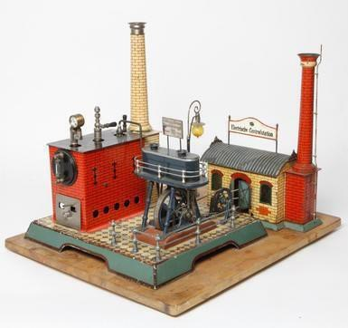
Für 45.000 Euro versteigert: Märklin-Dampfmaschine mit E-Werk. Foto: Auktionshaus Hohenstaufen
Zudem wurde auch telefonisch so eifrig mitgesteigert, dass zeitweise alle Apparate mit Fernbietern besetzt waren. Das Highlight der Versteigerung, eine Dampfmaschinenanlage mit Elektrizitätswerk von Märklin aus dem Jahr 1904, ging zum Aufrufpreis von 45 000 Euro an einen schriftlichen Vorbieter. 2750 Euro erbrachte der Stuttgarter Bahnhof in Spur 0. Überraschend hoch waren aber vor allem die Ergebnisse einiger als wenig spektakulär eingestufter Artikel. So erreichte ein Dampfloktender eines Märklin-Storchenbeins von Anfang des vorigen Jahrhunderts, aufgerufen zu 25 Euro, nach einem langen Bieterwettstreit die unerwartete Summe von 1100 Euro.
Ein Spur-0-Personenwagen 1841 von 1903, aufgerufen zu 1500 Euro, erhielt bei 8200 Euro den Zuschlag.
Göppingen - Die zweitägige Sommerauktion des Auktionshauses Hohenstaufen GmbH in Göppingen war sehr gut besucht. Interessierte aus dem In- und Ausland waren zugegen, als die weit über 1000 Objekte zum Aufruf kamen. Überwiegend standen Erzeugnisse früherer Märklin-Produktion zum Verkauf. Von fünf bis 45 000 Euro reichten die Preise der Artikel, die im umfangreichen und aufwändig gestalteten Katalog angeboten wurden. Sehr viele Käufer nutzten die Möglichkeit des schriftlichen Vorgebots. Aber auch telefonisch wurde geboten. Zeitweise waren bis zu vier Telefone mit Fernbietern besetzt. Sie sorgten für eine besondere Spannung im Auktionssaal.
Das Highlight der Versteigerung, eine Dampfmaschinenanlage mit Elektrizitätswerk von Märklin aus dem Jahr 1904, ging zum Aufrufpreis von 45 000 Euro an einen schriftlichen Vorbieter. Die Dampflokomotive aus der Zeit König Wilhelms II. von Württemberg von 1893 fand für 4800 Euro (im Katalog für 1200 Euro) einen Käufer und der Stuttgarter Bahnhof in Spur 0 wechselte für 2750 Euro den Besitzer.
Es ist immerhin ein Abbild, dass auch nach dem Neubau des S-21-Tiefbahnhofs in Stuttgart das Stadtbild noch prägen wird: Die Front des Hauptbahnhofs. In Blech gibt es das Modell des Bonatzbaus von Märklin für Spur 0 seit 1936. Und es wird am Freitag und Samstag am Göppinger Rosenplatz im Auktionshaus Hohenstaufen meist bietend versteigert. Der Aufrufpreis liegt bei 2400 Euro. Damit hat noch König Wilhelm II. gespielt Bereits zum zweiten Mal bringt das Auktionshaus Spielzeugraritäten vornehmlich aus dem Hause Märklin unter den Hammer.
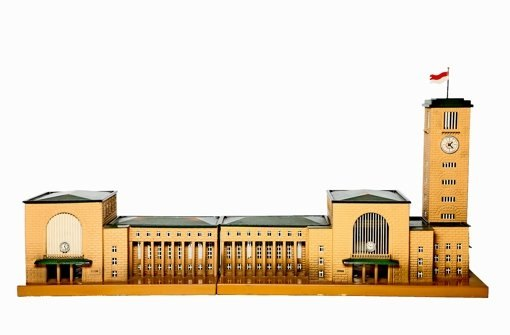
Der Stuttgarter Bahnhof für Spur 0. Foto: Auktionshaus Hohenstaufen
Knapp 2000 Positionen kommen zum Aufruf, darunter das ein Modell des Storchenbeins in Spur 0 mit einer ganz besonderen Historie. „Damit hat der württembergische König Wilhelm II. noch gespielt“, erklärt der Auktionator Roland Gaugele. Der König und Erbauer des Stuttgarter Bahnhofs, für den Fortschritt und Eisenbahn zusammengehörten, sei einer der ersten Käufer des Modells gewesen. Die Märklin-Lokomotive des Typs A 1 mit der Artikelnummer 1020 wurde 1893 erstmals angeboten und sei die „Ur-Mutter“ aller späteren Spur 0 Eisenbahnen. Das legendäre Storchenbein wird zum Preis von 1200 Euro aufgerufen.
Mehr als 100 Bieter werden erwartet Bei der ersten Auktion in Göppingen im Januar hatte ein Märklin-Blechschiff aus dem Jahr 1899 den Rekordpreis von 86?000 Euro erzielt, der Märklin Südbahnhof wurde für stolze 66?000 Euro ersteigert. Mehr als 100 Bieter waren vor Ort. International boten Sammler per Telefon mit. Die jetzige Auktion in der Rosenstraße 7 beginnt am Freitag um 13 Uhr und am Samstag um 10 Uhr. Eine Besichtigung ist am Freitag von 10 bis 17 Uhr und Samstag ab 9 Uhr möglich.
Ergebnisse · Stuttgarter Zeitung · 28. Januar 2014
86 000 Euro für erstes Märklin-Schiff
Göppingen - Märklin-Raritäten wie das erste große Blechschiff, eine Kutsche mit der schon Eugen Märklin mit seinen Kindern spielte oder ein großer Bahnhof in Top-Zustand sind am Wochenenden in Göppingen unter den Hammer gekommen. Rund 100 Bieter hatten die erste Versteigerung des Göppinger Auktionshauses Hohenstaufen am Rosenplatz besucht. Zum Aufruf kamen mehr als 600 Positionen. Den Zuschlag allerdings bekamen oft Bieter aus dem Ausland, die ihre Gebote schriftlich oder live am Telefon abgaben. Sammlern aus der Schweiz, Frankreich, Italien, Großbritannien und vor allem den USA hätten sich beteiligt, sagt Hans Georg Grupp vom Auktionshaus Hohenstaufen. „Etwa 65 Prozent des Umsatzes haben wir mit Telefonbietern gemacht“, fügt er hinzu.
Südbahnhof bringt 66 000 Euro
Den höchsten Preis erzielte eine Rarität aus dem, Jahr 1899. Die mehr als ein Meter lange „Resolution“ war das erste große Blechschiff im Märklin-Programm. 86 000 Euro plus die 20 Prozent Aufgeld für das Auktionshaus war das Modell einem Sammler wert. Daneben gab es die Blechkutsche, die für 15 500 Euro einen neuen Besitzer fand oder ein große Dampfmaschine für 20 000 Euro. Der große „Südbahnhof“ aus dem Jahr 1909 wurde für stolze 24 000 Euro aufgerufen. Den Zuschlag gab Grupps Partner, der Auktionator Roland Gaugele, letztlich für 66 000 Euro.
Neben den Einzelergebnissen ist Hans Georg Grupp aber auch mit Gesamtergebnis zufrieden. „Wir haben 70 Prozent der Angebote verkauft. Der Rest geht jetzt in den Nachverkauf“, erklärt er. Die nächste Auktion ist schon in Planung. Sie soll im Herbst dieses Jahres stattfinden.
Bei der Versteigerung des Auktionshauses Hohenstaufen in dessen Räumen am Rosenplatz kamen Lokomotiven und altes Blechspielzeug der Firma Märklin, vereinzelt aber auch Raritäten anderer Firmen, wie etwa Fleischmann, zum Aufruf. Das Auktionshaus war im vergangenen Jahr vom früheren Märklin-Pressesprecher Roland Gaugele, vom Nachrichtenmagazin Spiegel schon als "Mister Märklin" geadelt, und dem vereidigten Sachverständigen für altes Blechspielzeug, Hans Georg Grupp, gegründet worden.
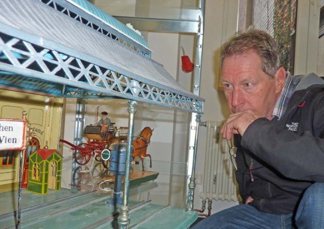
Eine Kutsche, mit der schon Eugen Märklin gespielt hatte, hat die Besucher interessiert. Das kleine Gefährt ging für 15.500 Euro weg.
Bereits heute zählt es in diesem Gebiet zu den bedeutensten Auktionshäusern weltweit. Eberhard Haas hat seine Anfahrt aus Remshalden nicht bereut und will wieder kommen: "Das nächste Mal würde ich Geld mitbringen", sagt der Liebhaber von Blechspielzeug.
Bieter waren aus ganz Europa angereist, vor allem aus den benachbarten Benelux-Staaten sowie aus Österreich und der Schweiz. Besonders scharf auf das Blechspielzeug aus good old Germany scheint man in Übersee zu sein. Mit Telefonbietern, die vor allem aus den USA zugeschaltet wurden, seien 65 Prozent des Umsatzes erzielt worden, verrät Grupp. Zahlreiche Interessenten für die über 600 Objekte der ersten Auktion des Hauses hatten sich bereits im Vorfeld gemeldet. "Steht die Leitung?", gehörte daher zu den regelmäßig von Roland Gaugele während der Auktion gestellten Fragen.
Sie standen in Konkurrenz zu den Bietern im Saal, der zu Spitzenzeiten mit bis zu 100 Interessenten knallvoll war. Trotzdem war der Ablauf geordnet, es herrschte gespannte Stille. Wer allerdings die Präsentation der Objekte durch weiß behandschuhte Hände erwartete, wurde enttäuscht. Die jeweiligen Versteigerungsgegenstände wurden beim Aufruf mittels Beamer an die Leinwand hinter dem Auktionator geworfen. Zudem waren sie in einem Katalog verzeichnet.
Auf besonderes Interesse stießen eine Kutsche aus dem Jahre 1895, mit der Eugen Märklin schon gespielt hatte, sowie das 1899 hergestellte, 105 Zentimeter lange Schiff "Resolution", das über einen noch immer intakten Originalantrieb (Uhrwerk) verfügt. 86.000 Euro war das Schiff einem Bieter wert. Die für 5000 Euro aufgerufene Kutsche ging bei 15 500 Euro weg. Weitere Schwergewichte waren eine Dampfmaschine, die 20.000 Euro erzielte. Für die größte Überraschung sorgte der "Südbahnhof" aus dem Jahre 1909, der für 66.000 Euro einen neuen Besitzer fand.
Die Bieter sind scheue Wesen. Ein Teilnehmer aus dem Ostalbkreis verrät den Grund. Die wertvollen Eisenbahnen seien nicht nur für Liebhaber, sondern auch für Diebe höchst interessant. Gaugele weiß dies genau. Er trug maßgeblich zur Ergreifung der Täter des großen Raubs aus dem Märklinmuseum vor knapp zehn Jahren bei.
Ziel des Auktionshauses ist es, Ansprechpartner für Sammler und Händler weltweit zu sein. "Ein Kundenstamm von über 1000 Adressen bietet für Sammler und Händler alter Spielsachen eine Plattform Objekte zu marktgerechten Preisen zu veräußern oder zu erwerben", betont Grupp. Um die angestrebte Rolle einnehmen zu können, solle das Marketing verstärkt werden. Die nächste Auktion ist für die Monate August/September geplant.
Vorschau · Stuttgarter Zeitung · 30. Dezember 2013
Jede Menge Märklin unterm Hammer
Blechspielzeugraritäten wie das erste große Märklin-Dampfschiff aus dem Jahr 1899 oder eine Kutsche von 1895,mit der Eugen Märklin und seine Kinder gespielt haben sollen, werden am 25. Januar im Göppinger Auktionshaus Hohenstaufen am Rosenplatz versteigert. Insgesamt sind es weit mehr als 600 Posten. Nein, eine Genugtuung sei es nicht, Sammlerobjekte seines alten Arbeitgebers unter den Hammer zu bringen, betont Roland Gaugele. Einen Grund dazu hätte er. Noch vor fünf Jahren war der 62-Jährige der Pressesprecher der Firma Märklin. Vom Insolvenzverwalter ist er dann nach 30 Jahren im Unternehmen auch als Produktmanager wegrationalisiert worden.
Roland Gaugele (links) und Georg Grupp stehen schon unter Dampf: In vier Wochen versteigern sie Märklin-Raritäten.
Zuvor hatte er unter anderem als „Undercoveragent“ einige Berühmtheit erlangt. Als es im Jahr 2005 nach dem spektakulären Millionenraub aus dem Märklin-Museum galt, Diebesgut als fingierter Aufkäufer in Wien zu identifizieren, stellte er sich zur Verfügung. Täter und Beute gingen den Ermittlern ins Netz. Gaugele hatte das Märklin-Museum unter seinen Fittichen, hatte auch eine große Museumswelt am Stammsitz konzipiert, die vom damaligen Eigentümer Kingsbridge jedoch storniert worden war. Und auch die ersten Pläne für die heutige Märklin-Erlebniswelt hat Roland Gaugele mitgestaltet.
„Nach der überraschenden Kündigung ist mein ganzer Lebensplan durcheinandergewirbelt worden“, erzählt er. Doch auf seine Erfahrung als Märklin-Kenner und seine Kontakte in Sammlerkreise kann er bauen.Er habe seither einige Märklin-Ausstellungen kuratiert und sich als Gutachter angeboten. „Das füllt aber nicht die ganze Arbeitszeit aus“, erklärt er. So kamer auf Auktionen.Zwei davon hat er schon durchgeführt, standesgemäß im Märklin-Saal der Stadthalle.Nun hat er das Auktionshaus Hohenstaufen gegründet zusammen mit seinem Partner Georg Grupp, der vereidigter Sachverständiger für Blechspielzeug und Eisenbahnen ist.
„Wir wollen uns unter den Top Drei der Auktionshäuser für Blechspielzeug etablieren“, erläutert Georg Grupp. Für die erste Auktion am 25. Januar erwarten er und Gaugele ordentlichen Zulauf. Die Einlieferungen kämen nicht nur aus ganz Deutschland, sondern auch aus dem Ausland. Zudem erwartet der Auktionator Bieter aus aller Welt, die zum Teil per Telefon zur Versteigerung zugeschaltet werden.
Neben der erwähnten Kutsche aus dem Märklin’schen Familienbesitz, die für 5000 Euro zum Aufruf kommen soll, und dem mehr als einen Meter langen Dampfschiff Resolution, das ob seines sehr guten Zustands einige Zigtausend Euro wert sein sollte, kommen etliche Liebhaberstücke wie der Stuttgarter Bahnhof oder Dampfmaschinenunikate unter den Hammer. Aber auch Zubehör und Ersatzteile werden angeboten. „Zu 95 Prozent werden Märklin- Artikel zum Aufruf kommen. Es gibt aber auch Liebhaberstücke von Bing, Fleischmann oder anderen Herstellern in unserem Katalog“, erklärt Roland Gaugele. Die Versteigerung findet am Samstag, 25. Januar, um 10 Uhr statt.
Am 24. Januar von 10 bis 17 Uhr und am 25. Januar von 9 Uhr an können die Angebote vorbesichtigt werden.
Pressemitteilung · Auktionshaus Hohenstaufen · 17. Dezember 2013
Eugen Märklins Kutsche von 1895 wird versteigert
Göppingen, 17. Dezember 2013. Die Kutsche, mit der Eugen Märklin (aus der Gründer-generation der Firma Märklin) gegen Ende des 19. Jahrhunderts mit seinen Kindern spielte, kommt am 25. Januar 2014 im Auktionshaus Hohenstaufen in Göppingen zum Aufruf. Über mehrere Generationen hinweg befand sich das seltene Exponat in Familienbesitz.
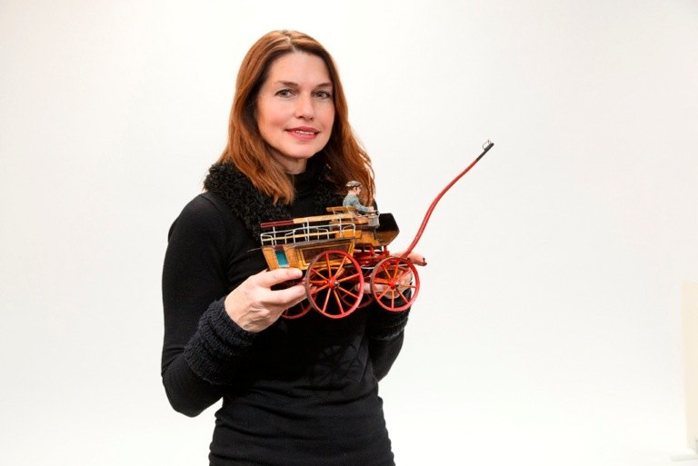
Die Kutsche, mit der Eugen Märklin gegen Ende des 19. Jahrhunderts mit seinen Kindern spielte. Versteigert am 25. Januar 2014.
Die Kutsche in der Originalausführung von 1895 und stellt eines der ersten technischen Produkte von Märklin nach der Ära der Mädchenspielzeuge dar. Sie wurde im ersten Märklin-Katalog von 1895 unter der Nummer 1418 angeboten.
Die Kutsche ist auf € 5000 taxiert.
Fast ebenso alt wie die Kutsche ist das erste große Märklin-Schiff, die „Resolution“, die 1899 hergestellt und angeboten wurde. Mit 105 cm Länge beeindruckt sie im Modell und hat alle Attribute des großen Vorbilds: vier Rettungsboote, 2 Kamine, 2 Masten und einen großen eisernen Anker. Angetrieben wird das Schiff von einem starken, immer noch intakten Uhrwerk.
Die „Resolution“ wird auf einen oberen fünfstelligen Eurobetrag taxiert. Eine Größenordnung, die hinsichtlich Erhaltung und Ausführung nicht überrascht.
Das Auktionshaus Hohenstaufen in Göppingen versteigert Blechspielzeug und Modell-eisenbahnen und nimmt Versteigerungsaufträge jederzeit an. Die Verantwortlichen sind Hans Georg Grupp, vereidigter Sachverständiger für Blechspielzeug und Eisenbahnen und Roland Gaugele, Auktionator und bis 2009 30 Jahre für Märklin tätig (Märklin-Museum, historisches Produktarchiv, Produktmanagement, Pressearbeit).
Der Sitz des Auktionshauses Hohenstaufen befindet sich am Rosenplatz 11 in 73033 Göppingen.
Auktionstermin : Samstag, 25. Januar 2014 ab 10.00 Uhr
Vorbesichtigung : Freitag, 24. Januar 2014 von 10.00 Uhr bis 17.00 Uhr
Samstag, 25. Januar 2014 ab 9.00 Uhr
Quelle: Auktionshaus Hohenstaufen, 17. Dezember 2013